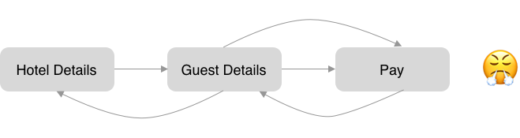

More Projects


Snaptravel is an online travel agency based in Toronto. As a product design intern, I helped Snaptravel revamp its current checkout flow.
User Flow Audit
Competitor Analysis
UI design
Redesigned the checkout pages' UI to increase the conversion rate by up to 11%.
An ideal checkout flow should be smooth and linear. It should feature three steps: verify hotel details, insert guest details and pay with a credit card or PayPal.
However, users keep backtracking on Snaptravel's checkout pages. My job is to figure out why they are doing this and fix this problem.
Because Snaptravel’s business model is special. It can only hold the competitive rate for 30 minutes. After 30 minutes, the rate will expire, and the user has to start over again with another price.
Therefore, the goal here is to allow the user to finish the payment and secure the room as fast as possible.
The event tracker on Amplitude showed:
50% of users go from step 2 to step 1.
35% of users go from step 3 to step 2.
21% of users go from step 3 to step 1.
11% of users who opened the booking form didn't finish the booking and let the rate expired.
The result indicates that the backtracking problem does exist and it is hurting the conversion rate since at least 11% of users didn't finish the booking. So how might we solve this problem and increase the conversion rate?
The current checkout flow has three steps: hotel details, guest details and payment information, organized by three collapsible cards. It works well on desktops but creates problems on mobile devices.
By the time users reach the final "complete booking" button, all important information such as hotel name, dates and prices are already scrolled out of the viewport, resulting in the backtracking problem.
Before tapping the "complete booking" button, if users want to double-check if the information they entered was correct, they have to expand the hotel details card again. However, once the card is expanded, it can only be collapsed by tapping the orange button because the triangle button on the top-right corner is not a toggle switch.
I conducted research on the structure of booking forms on Snaptravel's major competitors. There are mainly two types of organization schemes.
Multiple pages: Booking.com
The checkout flow is separated in different pages. A timeline is on top to show the steps. Price is shown consistently at the bottom of each page with different CTA on the button.
Single page with scrolling: Priceline.com
Everything is on the same page with empty forms to be filled. Forms change colour after completion. There is only one button for the final confirmation.
Both organization schemes keep key information such as price and date within user's viewport consistently. This kind of design reduces user's cognitive burden and avoids the backtracking problem, which interrupts the entire checkout flow.
Based on the research findings, I made some design recommendations to solve this problem.
This quick remedy requires the least effort. Turning the button into a toggle switch will allow the user to have a quick sneak peek of the forms they filled.
This option also keeps the current mechanism. Making the collapsed card sticky to persist key details would solve the backtracking problem.
Another option is to present a static summary card on top of the "complete booking" button. It allows users to have enough screen space for previous steps.
I guerilla tested the three design recommendations above and gathered feedback. Most participants preferred to use sticky or static summary cards than fix the button. But between the sticky and static version of the summary card, there was a divergence of views.
Some suggested that sticky summary cards take up too much screen space and cramp the space for payment information forms.
Others thought the static summary card doesn't completely solve the backtracking problem, as users have to scroll back and open the card to make modifications if needed.
Since it was a tie between the sticky and static version of summary cards, the product design team would work with product managers to build prototypes and run A/B testings to determine which one would be the better version.
Unfortunately, because of COVID-19, this project was put to a halt. I am unable to provide the test results here in my portfolio. But I hope that I've clearly articulated my design and decision-making process.
Every design decision needs to be supported by the research data. If there is no evidence shows the problem exists, don't waste time fixing it. Likewise, if you are not 100% sure that the modification is going to increase the conversion rate, don't do it either. Avoid adding features unless they are essential to the application. Always keep the business and user goals at the forefront of the design process.
Rigorous data-oriented research is critical. It sets the right direction for your design and makes it more convincing to other stakeholders.